10 Search Tricks to Master Google
Group 3 INFO 320 Autumn Quarter 2014
1. Search by Image
Can’t remember where you found an image but have it downloaded to your computer? Google allows users to search directly by an image using google.com/images. Simply drag and drop the image into the search box and Google will give you all the information about it.
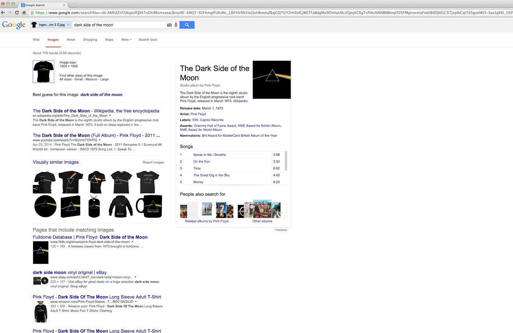2. Search Tools
Google Search Tools let users search with a greater depth of context. Can’t remember the exact site you visited but remember the content? Change the results to only show pages you’ve visited. Curious what results you’d get if you were searching last year? Change the time filter to a custom range and take a step back in time.
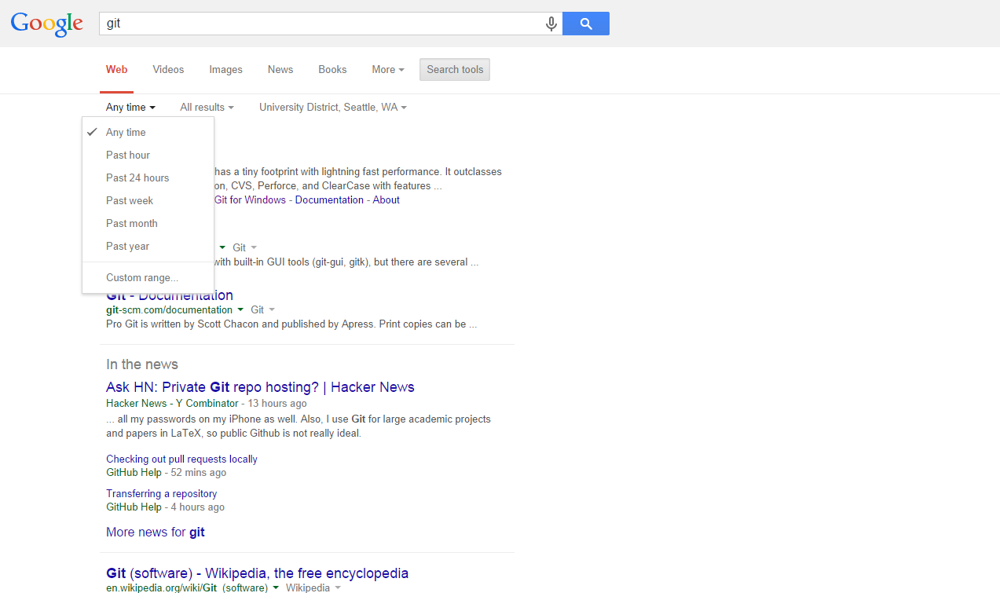 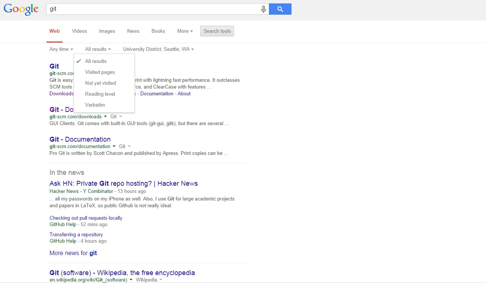3. Google Finance
The service provide users with business and enterprise headlines for a lot of corporations, ranging from financial decisions to major news events. The best part is it stock information, it has the most comprehensive stock pricing information of all the public trading stocks all over the world, which is very helpful for people doing stock technical analysis and making financial decisions.
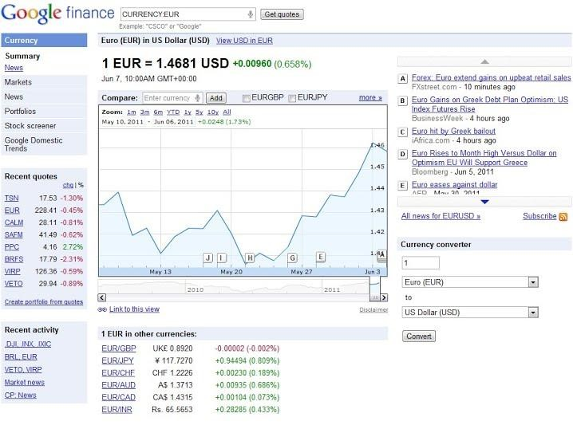4. Specify Searches
Slight modifications to your Google query can help make your searches more accurate. For example, adding quotation marks around a phrase will only return results with the exact quote. Also, adding a hyphen before a word will remove the search term. This can be very helpful for removing unwanted results. Another example is adding “site:”, which allows you to search from within a given domain.
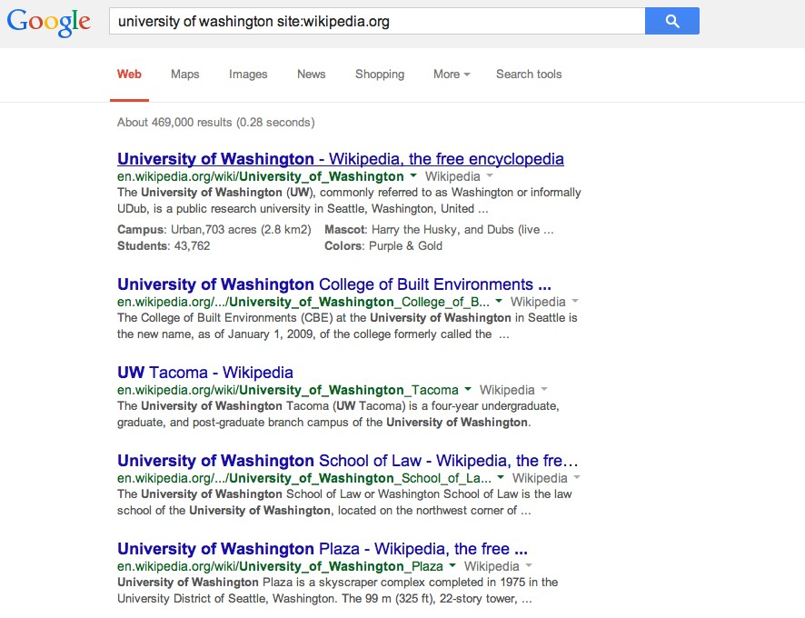5. Unit Conversions
Google also has a functions that provides unite conversions. To use this you can simply search using the following format: “amount” “unit 1” in “unit 2”. For example, “2 cups in ounces”. This will not only provide the answer, but will also open up a converter that can be used for other unit conversions.
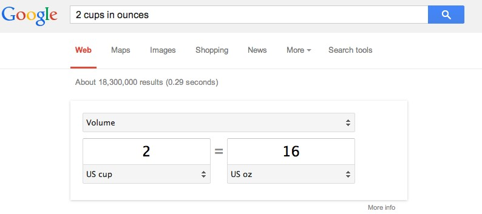6. Google Translate
Google Translate is a versatile translation engine. You can use it by either accessing the dedicated Google Translate page or by searching “language 1” to language 2”, for ex: English to Spanish. While usually reliable for longer phrases, the best results are achieved when translating shorter sentences.
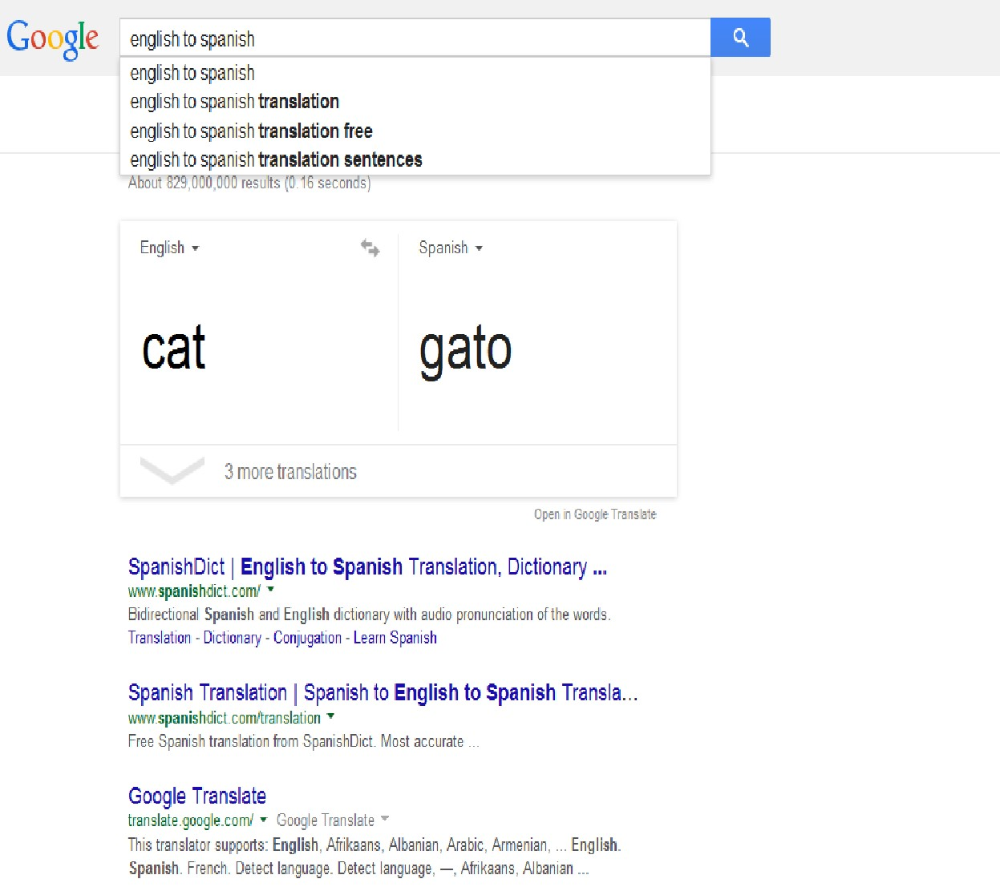7. Shopping
Originally named Froogle, (from the word frugal), Google Shopping enables users to compare product prices from a wide variety of vendors. These vendors must pay to have their items displayed. To complete the purchase, the user is redirected to the vendor’s website.
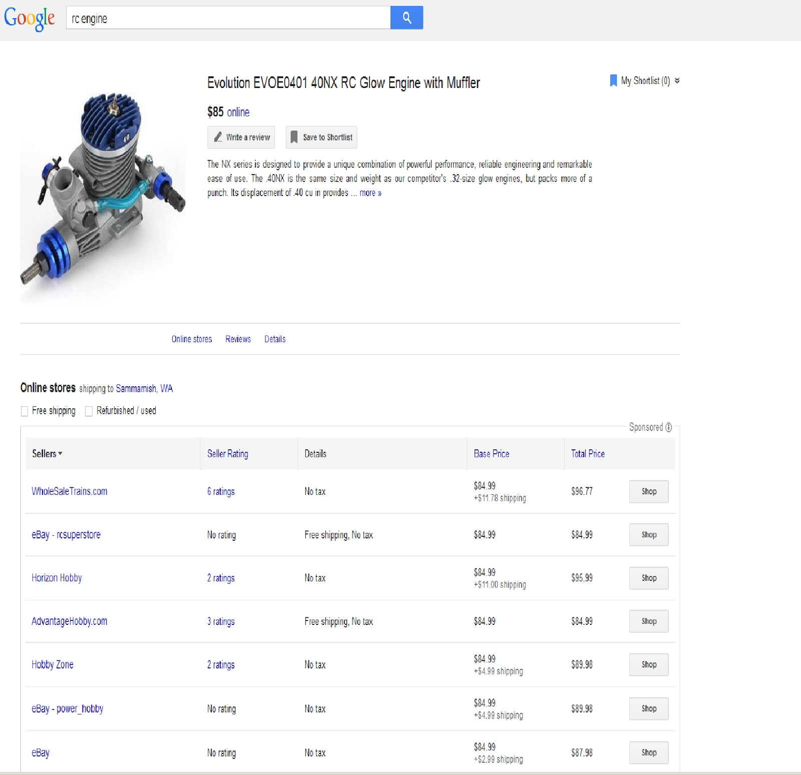8. Google Voice
Google Voice is Google’s telephone service. It is accessible to anyone with a Gmail account, and the service contains some really cool features, such as voicemail transcription (voicemails become text), and SMS to email (SMSs become emails if enabled).
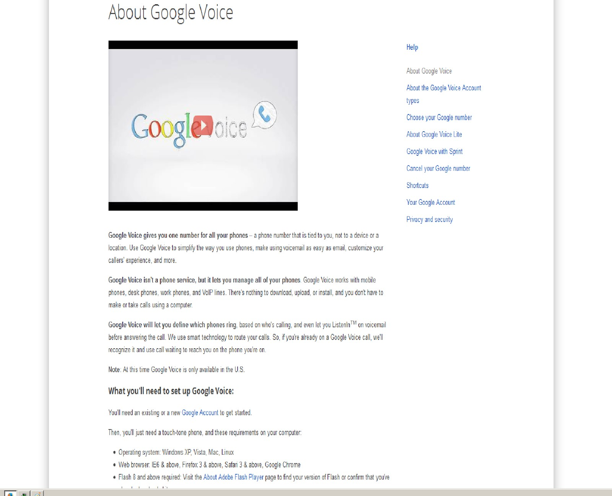9. Music Assistance
Found a new artist that you really like? Find all their songs via google just by typing their name into the search bar! On the side bar, there will be a list of all their known songs as well as albums. Clicking on the links will lead to allow you to play the song through YouTube.com.
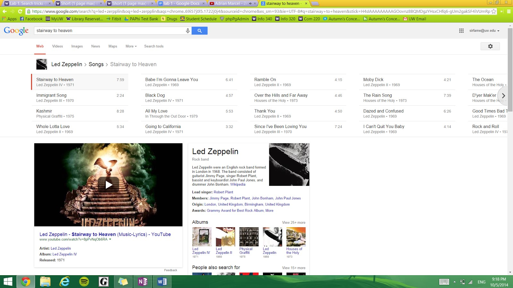10. Google Scholar
Looking for academic articles that uphold a high level of academic integrity and legitimacy? Use scholar.google.com! Google’s scholar search tool allows users to browse through an archive of articles that have been proofread and edited by professors and other scholarly figures. It works the same way as the regular search engine does, the only difference is that the links that are displayed lead to the sites which house scholarly articles.
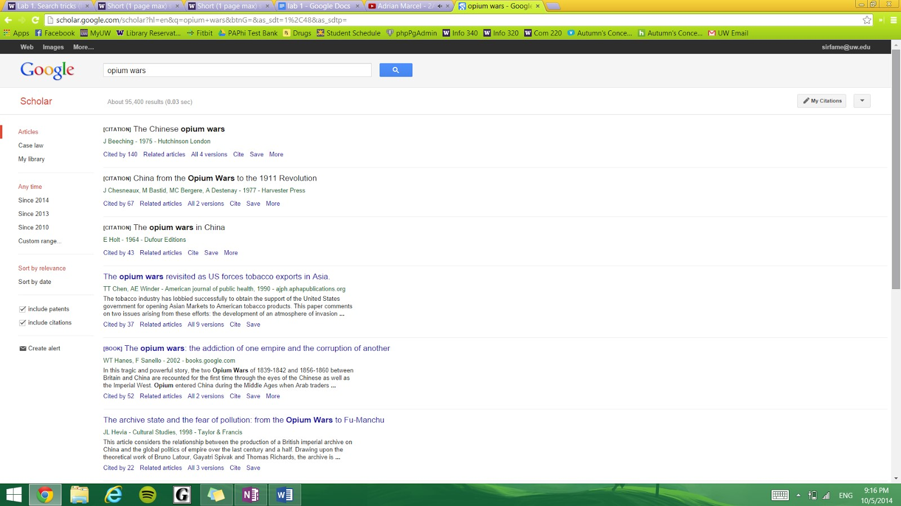